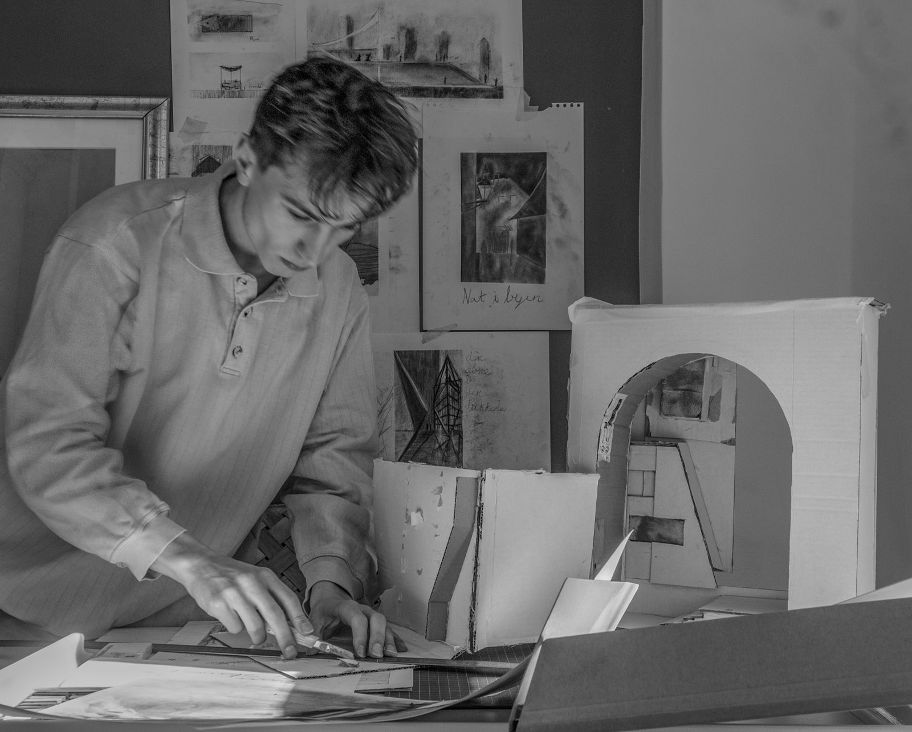

I am an architecture student at the Royal Danish Academy, and I am building a lifework: practical research into how meaning is made — through buildings, rituals, essays, images, and now a game world.
The question underneath everything here: as technology removes more and more scarcity, what is worth making? I don't treat that as philosophy to answer from a distance. Each project on this site is one concrete experiment — a bathhouse that stayed uncertain, a naming ritual for a hospital, temples studied through the body and the hand, and a spirit world that needs homes built.